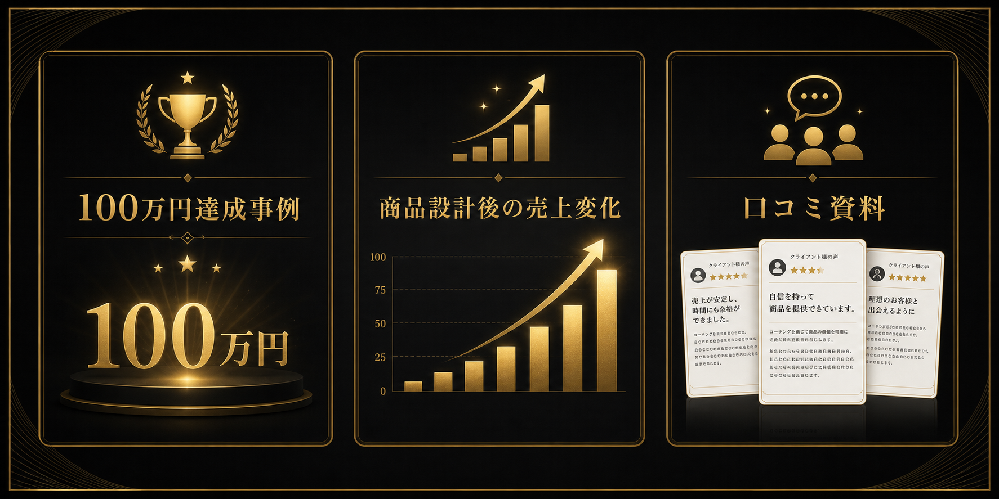

月3万円の継続サポートを
増やしても手元に残らない
コーチングはできる。でも、ビジネスとして安定しない。
SNSを頑張っても
問い合わせにつながらない
無料相談で
終わってしまう
自分の商品に
30万円の価値があるかわからない
必要なのは、努力量ではなく「売れる設計」です。
Before
低単価毎月集客無料相談で終了
▶
After
30万円商品導線設計選ばれる先生ポジション
受講後に変わるのは、商品だけではありません。
商品に
自信が持てる
毎月の集客不安が
減る
無料相談で
自然に提案できる
口コミ・紹介が
生まれる土台ができる
小林起業塾 個別プロデュースとは
コーチングを30万円で選ばれる商品に変え、
SNS・LINE・個別相談まで一気通貫で整える伴走型コンサルティング。
30万円で選ばれるコーチに
なるための7つの設計ステップ
こんなコーチに
おすすめです
- 01現状分析・ボトルネック診断
- 0230万円商品コンセプト設計
- 03先生ポジション設計
- 04発信テーマ設計
- 05LINE・教育導線設計
- 06個別相談・セールス設計
- 07サポート・口コミ設計
月10万〜30万円で
売上が止まっている
低単価セッションで
疲れている
商品設計と
マーケティングが苦手
高単価でも
選ばれる商品を作りたい
実績・
お客様の声

※実績・お客様の声は順次追加予定です。
運営者
プロフィール
小林 優希
コーチのための高単価商品設計プロデューサー
コーチ・コンサルタントの高単価化を専門に、商品設計・導線設計・個別相談の仕組み化を支援。これまでに多くのコーチが30万円商品を構築し、安定した売上と自信を持つ働き方を実現できるよう伴走してきました。「選ばれる先生になる」ことをゴールに、1年間伴走でサポートします。
まずは個別プロデュース相談で、
今の課題を整理しませんか。
30万円で選ばれる商品にするなら、何を変えるべきか。
商品・発信・導線・個別相談のどこから整えるべきかを一緒に見ていきます。
相談だけでも大丈夫です。必要な場合にだけ、次の選択肢をご案内します。